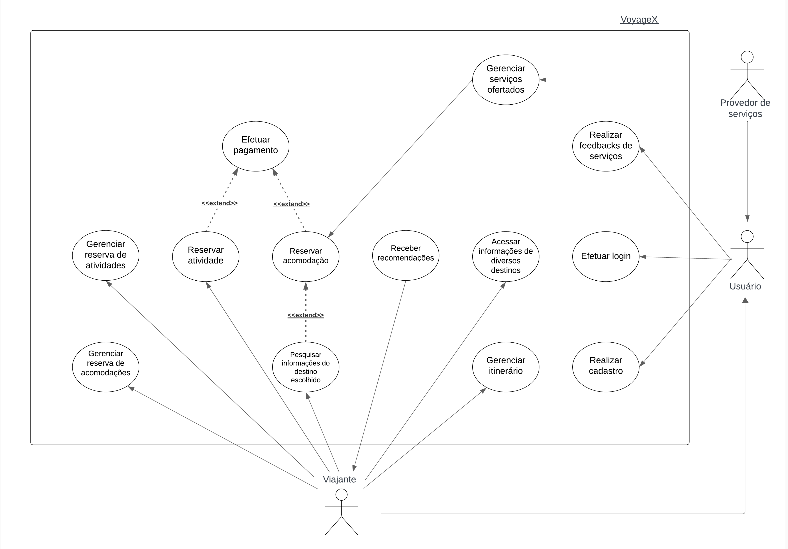

Estudo de Caso - VoyageX
Introdução
VoyageX foi contruído pelo professor George Marsicano (2023) como um Estudo de Caso almejando uma contribuição na matéria envolvendo o assunto "Casos de Uso". Neste artefato, é apresentado o que foi realizado pela facção Insurgentes Estelares, sintetizando os Atores, Casos de Uso identificado além das suas especificações com base no documento proposto.
Casos de Uso
Atores
Foram identificados 2 atores dos fluxos de eventos do nosso sistema, são eles:
- Viajante: Destinado a quem utiliza os serviços do aplicativo VoyageX
- Provedor de Serviços: Destinado a quem organiza os serviços que serão ofertados
- Usuário: Refere-se a ações compartilhadas em que os outros dois atores participam
Casos de Uso Identificados
É apresentado na Tabela 1 os Casos de Uso que foram encontrados:
| ID | NOME DO CASO DE USO | ATOR | RESULTADO |
|---|---|---|---|
| CdU-01 | Realizar cadastro | Usuário | Cadastro realizado no aplicativo |
| CdU-02 | Efetuar login | Usuário | Acesso autorizado ao "VoyageX" |
| CdU-03 | Realizar feedbacks de serviços | Viajante | Os viajantes podem avaliar os serviços utilizados e os provedores de hospedagem podem avaliar o comportamento do contratante |
| CdU-04 | Acessar informações de diversos destinos | Viajante | Visualizar conteúdos de destinos disponíveis |
| CdU-05 | Gerenciar itinerário | Usuário | Manter viagem com calendário e o cronograma atualizado |
| CdU-06 | Receber recomendações | Viajante | Obter sugestões de acomodações e atividades de acordo com preferências |
| CdU-07 | Pesquisar informações do destino escolhido | Viajante | Pesquisar conteúdo do destino escolhido |
| CdU-08 | Reservar acomodação | Viajante | Acomodação reservada |
| CdU-09 | Reservar atividade | Viajante | Atividade reservada |
| CdU-10 | Efetuar pagamento | Viajante | Acessar informações da atividade escolhida |
| CdU-11 | Gerenciar reserva de atividades | Viajante | Reservar, atualizar e cancelar reserva de acomodação |
| CdU-12 | Gerenciar reserva de acomodações | Provedor de Serviços | Cadastrar e remover serviços de hospedagem e atividades |
Com os atores e casos de usos identificados, foi criado o diagrama de casos de uso para visualizar como e por quem as ações são realizadas dentro do sistema, assim como a ligação entre casos quando existiam. O diagrama está disponível na Figura 1.

Especificação dos Casos de Uso
CdU-07 - Pesquisar informações do destino escolhido
| Nome do caso de uso | Pesquisar informações do destino escolhido |
|---|---|
| Autor | Gustavo França, Larissa Gomes e Oscar de Brito |
| 1. Atores | Viajante |
| 2. Breve Descrição | O usuário pode pesquisar informações detalhadas sobre o local, incluindo os melhores períodos para visitar, atrações culturais, culinária local, e dicas de viagem. Também podem filtrar acomodações por preço, localização, tipo (hotel, aluguel de temporada, pousada), e avaliações de outros viajantes. |
| 3. Fluxo básico de eventos |
3.1. O viajante digita o destino que deseja pesquisar (FE01) 3.2. O sistema apresenta as seguintes opções: - Pesquisar informações de destino - Filtrar acomodações (FA01) 3.3. O viajante seleciona "Pesquisar informações de destino" (FE01) 3.4. O sistema retorna as informações requisitadas. (RN01) (RN02) (RN03) (FA02) |
| 4. Fluxo Alternativos |
4.1. FA01 - Filtrar acomodações 4.1.1. O viajante seleciona a opção "Filtrar acomodações" 4.1.2. O sistema apresenta as seguintes opções de filtro: - Preço - Localização - Tipo (hotel, aluguel de temporada, pousada) - Avaliações de outros viajantes 4.1.3. O viajante informa os filtros que deseja aplicar 4.1.4. O sistema valida as informações (FE01) O caso de uso retorna ao 3.4 do FB 4.2. FA02 - Visualizar acomodação 4.2.1. O viajante seleciona uma acomodação. O caso de uso retorna ao 3.4 do FB |
| 5. Fluxos de exceção |
5.1. FE01 - Destino inválido No passo 3.3, caso o destino digitado não corresponda a nenhum local válido, o sistema deve emitir a mensagem: “Destino inválido, digite novamente”. E, o caso de uso retorna ao 3.1 do FB. 5.1. FE01 - Localização inválida No passo 4.1.4 do FA, caso a localização digitada não corresponda a nenhum local válido, o sistema deve emitir a mensagem: “Localização inválida, digite novamente”. E, o caso de uso retorna ao 4.1.3 do FA. |
| 6. Pré-condições |
6.1. O viajante deve possuir uma conta na plataforma 6.2. O viajante deve estar logado na sua conta |
| 7. Pós-condições |
7.1. Informações do destino desejado 7.2. Acomodações filtradas como desejado |
| 8. Pontos de extensão | Não há. |
| 9. Requisitos especiais | Não há |
| 10. Regras de negócio |
RN01 - Se a informação requisitada for de informações de destino, então ela deve apresentar no máximo os 2 melhores períodos para ser visitado. As atrações culturais com os seus períodos de funcionamento. A culinária local com as suas restrições alimentares. Nas dicas de viagem, devem ser listados as 5 melhores dicas baseado nas avaliações dos usuários RN02 - Se a informação requisitada for de filtrar acomodações, então ela deve apresentar uma faixa entre o valor mínimo e o máximo, além de listar por uma ordenação por preço. Na localização, poderá ser definida por destinos mais próximos da localização atual do usuário. O tipo do destino deve apresentar 3 categorias diferentes. E nas avaliações de outros viajantes, deve apresentar de 1 a 5 estrelas. RN03 - Se a informação requisitada for de visualizar acomodações, então ela deve apresentar até 15 fotos da acomodação. Nas descrições detalhadas, até 2500 caracteres e na disponibilidade, deve ser apresentado os períodos de reserva da acomodação |
| 11. Informações adicionais | Não há |
CdU-08 - Reservar acomodação
| Nome do caso de uso | Reservar acomodação | |||||||||||||||||||
|---|---|---|---|---|---|---|---|---|---|---|---|---|---|---|---|---|---|---|---|---|
| Autor | Gustavo França, Larissa Gomes e Oscar de Brito | |||||||||||||||||||
| 1. Atores | Viajante e o Provedor de serviços | |||||||||||||||||||
| 2. Breve Descrição | O viajante pode escolher a acomodação, visualizar fotos, ler descrições detalhadas, verificar a disponibilidade e realizar a reserva diretamente pelo aplicativo. | |||||||||||||||||||
| 3. Fluxo básico de eventos |
3.1. O viajante seleciona o período de reserva (FE01) 3.2. O viajante informa a quantidade de hóspedes 3.3. O viajante informa os dados dos hóspedes 3.4. O viajante seleciona a opção "Reservar acomodação" 3.5. O sistema valida as informações (RN01) 3.6. O sistema informa o valor final e solicita o pagamento (PE02) 3.7. O sistema envia a solicitação de reserva para o provedor de serviços 3.8. O provedor de serviços analisa a reserva (FE02) 3.9. O sistema envia um email do status da reserva para o viajante (RN02) |
|||||||||||||||||||
| 4. Fluxo Alternativos | Não há. | |||||||||||||||||||
| 5. Fluxos de exceção |
5.1. FE01 - Período inválido No passo 3.1 do FB, caso o período de reserva selecionado não esteja disponível, o sistema deve emitir a mensagem: “Esta data não está disponível”. E, o caso de uso retorna ao 3.1 do FB. 5.2. FE02 - Reserva rejeitada No passo 3.8 do FB, caso o provedor de serviços rejeite a solicitação de reserva, o sistema deve enviar um aviso ao viajante: “Sua solicitação de reserva foi recusada”. E, o caso de uso retorna ao 3.9 do FB. |
|||||||||||||||||||
| 6. Pré-condições |
6.1. O viajante deve possuir uma conta na plataforma 6.2. O viajante deve estar logado na sua conta 6.3. O viajante selecionou uma acomodação |
|||||||||||||||||||
| 7. Pós-condições | 7.1. Reserva de acomodação concluída | |||||||||||||||||||
| 8. Pontos de extensão |
8.1. PE01 - Efetuar pagamento é um ponto de extensão do caso de uso Reservar acomodação 8.2. Reservar acomodação é um ponto de extensão do caso de uso Pesquisar informações do destino escolhido |
|||||||||||||||||||
| 9. Requisitos especiais | Não há | |||||||||||||||||||
| 10. Regras de negócio |
(RN01) - Validação de informações
| |||||||||||||||||||
| 11. Informações adicionais | Não há |
CdU-10 - Efetuar pagamento
| Nome do caso de uso | Efetuar pagamento |
|---|---|
| Autor | Gustavo França, Larissa Gomes e Oscar de Brito |
| 1. Atores | Viajante |
| 2. Breve Descrição | O viajante deve pagar os débitos pendentes |
| 3. Fluxo básico de eventos |
3.1. O sistema apresenta as seguintes opções: - Efetuar pagamento - Adicionar novo cartão (FA01) 3.2. O viajante seleciona a opção "Efetuar pagamento" 3.3. O sistema apresenta as seguintes opções:
3.4. O viajante seleciona uma forma de pagamento (RN01) 3.5. O viajante confirma o pagamento (RN02) (RN03) (RN04) 3.6. O sistema verifica se o pagamento foi efetuado (FE01) 3.7. O sistema emite um comprovante de pagamento e confirma o pagamento da reserva |
| 4. Fluxo Alternativos |
4.1. FA01 - Adicionar novo cartão 4.1.1. O viajante seleciona a opção "Adicionar novo cartão" 4.1.2. O viajante informa o número do cartão 4.1.3. O viajante informa a data de vencimento 4.1.4. O viajante informa o CVV do cartão 4.1.5. O viajante informa o País de emissão do cartão 4.1.6. O viajante pode informar um apelido para o cartão 4.1.7. O viajante seleciona a opção do cartão que deseja utilizar (crédito ou débito) 4.1.8. O sistema adiciona um novo cartão a carteira do viajante O caso de uso retorna ao item 3.1 do FB |
| 5. Fluxos de exceção |
5.1. FE01 - Pagamento não identificado No passo 3.6 do FB, caso o sistema não identifique nenhum pagamento efetuado, o sistema deve emitir a mensagem: “O pagamento não foi finalizado”. E, o caso de uso retorna ao 3.1 do FB. |
| 6. Pré-condições |
6.1. O viajante deve possuir uma conta na plataforma 6.2. O viajante deve estar logado na sua conta 6.3. O viajante realizou uma reserva 6.4. O viajante possui o pagamento de uma reserva pendente |
| 7. Pós-condições | 7.1. Pagamento da reserva confirmado |
| 8. Pontos de extensão |
8.1. PE01 - Efetuar pagamento é um ponto de extensão do caso de uso Reservar acomodação |
| 9. Requisitos especiais | Não há |
| 10. Regras de negócio |
RN01 - Se a forma de pagamento escolhida for cartão de crédito ou débito, então o viajante deverá selecionar um dos cartões da carteira. RN02 - Quando a forma de pagamento escolhida for Boleto e PIX, então o pagamento deve ser realizado dentro de 30 minutos. RN03 - Quando a forma de pagamento escolhida for cartão de crédito, então o cartão selecionado deve possuir limite para ser debitado. RN04 - Quando a forma de pagamento escolhida for cartão de crédito, então o cartão selecionado deve possuir saldo para ser debitado. |
| 11. Informações adicionais | Não há. |
Histórico de versões
| Data | Versão | Descrição | Autor |
|---|---|---|---|
| 09/12 | 1.0 | Criação do artefato | Gustavo França e Oscar de Brito |
| 12/12 | 1. | Correção das especificações do artefato | Gustavo França, Larissa Gomes e Oscar de Brito |